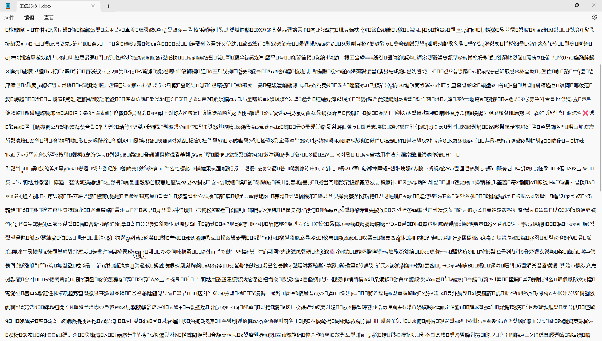

Markdown 简介和简单教程
Markdown是什么？
Markdown是一种轻量级标记语言，由John Gruber在2004年创建，设计初衷是“易读易写”。
标记语言是用来描述了文本的结构和呈现效果的语言。
Markdown专注于内容与结构，源码即文档，并且你能够很方便地将其转换为HTML或者其它格式的文档，如今得到了广泛的应用。
在使用AI的时候我们可能会看到AI先输出一堆的“**”和“##”，这就是Markdown的标记符号。
Markdown和Word
| 格式 | Markdown (.md) | Word (.docx) |
|---|---|---|
| 本质 | 纯文本 | 二进制/压缩包 (XML) |
| 可读性 | 极高，源码即文档 | 源码不可读，必须依赖对应软件 |
| 专注点 | 内容与结构 | 排版与样式 (所见即所得) |
| 兼容性 | 任何文本编辑器均可打开 | 需要 Office 或兼容软件 |
- 对比.docx： Markdown 让作者专注于写作内容而非频繁调整字体大小和行距。它更轻量，且方便在不同平台间迁移。
并且你可以双手一直放在键盘上抛弃掉你的鼠标（
- 对比其它标记语言： Markdown的语法更加简单，且源码的可读性更强。
HTML:<p>你说得对。</p>


Markdown 常用格式
以下是 Markdown 中最基础且常用的格式语法：
1. 标题
使用 # 号可表示 1-6 级标题，一级标题对应 HTML 的 <h1>。
注意：在大部分Markdown编辑器中，都应该在“#”后边加上一个空格。
2. 文本样式
- 加粗：使用两个星号包裹，例如
**这里是粗体**。 - 斜体：使用一个星号包裹，例如
*这里是斜体*。 - ~~删除线~~：使用两个波浪号包裹，例如
~~这是一段删除文本~~。 -
在一些Markdown编辑器中还支持高亮：用两个等号包裹即可，例如 \=\=高亮文本\=\=
3. 列表
无序列表（使用 -、+ 或 *）：
- 项目 1
- 项目 2
- 子项目 A
有序列表（使用数字加点 1.）：
- 第一步
- 第二步
- 第三步
4. 链接与图片
- 链接：
[Google](https://www.google.com) -
图片：
 -
图片地址可以是本地图片的文件位置，也可以是网络图片的URL
在使用到本地图片时建议将图片和文档放置在同一工作区，并且使用相对路径。
5. 引用
使用 > 符号来表示引用块：
这是一个引用段落。
6. 代码
行内代码：使用反引号 ` 包裹，例如 print("Hello World")。
代码块：使用三个反引号 ``` 包裹，并可指定语言进行高亮：
7. 分割线
使用三个或以上的 - 或 *：
8. 转义字符
如果说想要在Markdown中打出之前提到的各种标识符，如*和~，在它们前边加上\即可。
9. 数学公式
Markdown 本身是轻量标记语言，不直接定义数学语法。但是一些Markdown 编辑器启用了数学公式支持。（使用的是Latex的格式）
常用的数学分隔符
- 行内公式（inline）：使用单美元符号
$...$，或\( ... \)
示例：$e^{i\pi}+1=0$→ \(e^{i\pi}+1=0\)（渲染器支持时） - 展示公式（display，居中、独占一行）：使用双美元符号
$$ ... $$，或\[ ... \]
示例： 即： $$ \int_0^\infty e^{-x^2}\,dx = \frac{\sqrt{\pi}}{2} $$ 具体公式的写法可以参考下边的网站
除此之外Markdown还有一些其它格式和需要注意的点，感兴趣的话可以参考一下官方教程：